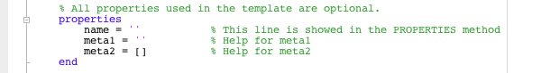
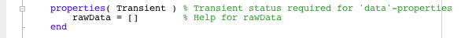
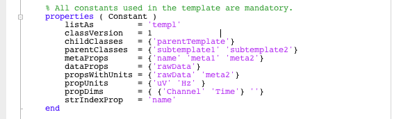
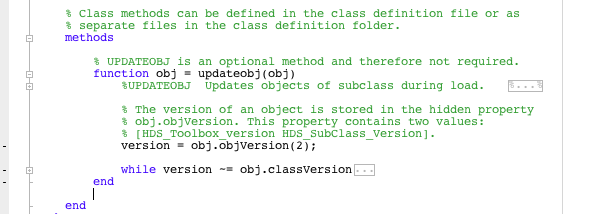

| On this page… |
|---|
The HDS Toolbox provides a template which can be used as a starting point for a custom class definition file. This template can be found in the HDS Toolbox folder:
HDS Toolbox/@HDSTemplate/HDSTemplate.m
and can be opened by calling the class definition from the Matlab command line:
>> edit HDSTemplate
The HDSTemplate class definition can be used as a template for other user specified class definitions. It meets all requirements for correctly defining a subclass of the HDS Toolbox.
In this section, we will go over the specifics in the "HDS_Template". Let's start with the class definition declaration on the first line:

This defines the a class definition with name "HDSTemplate". We can also see that the "HDSTemplate" class is a subclass of the "HDS" class. The first commented line is called the H1 line and summarizes the class definition. This line has a similar function as the H1 line in other methods/functions and is displayed when the METHODS function is used.
Any commented lines following the H1 line are used to describe the class and are displayed when the HELP function is used on objects of this class. This is exactly similar for function declarations.

Specific properties are, as the name implies, specific to the custom class definition and can be whatever you want them to be. The commented text following the property name can be used to describe the constants of the property and will be shown with the PROPERTIES methods.
Properties can have different attributes like "Hidden", "Transient" and "Dependent". See the Matlab help for a complete description of these attributes. It is recommended that you do not use the "Private" attribute as this can result in problems when a class definition is updated in some rare occasions.
Properties defined as "meta-data" in the constants (see below), are required have the class-type of the contents defined in the class definition. For example, meta1 = '', meta1 = {}, meta1 = false or meta1 = []. Uninitialized properties are assumed to be numeric. This is required in order to correctly populate the search tables for queries.

Properties defined as "data" (see below), are required to have the "Transient" attribute. This is necessary because the HDS Toolbox saves the contents of these properties in a separate file for improve data management efficiency.

Next are the required properties, these properties are required to be specified by the HDS_Main class definition and provide the HDS Toolbox with the necessary information about how objects of the class should be treated:
|
Methods for the subclass can be defined in the class definition file, or as separate files located in the class definition folder.

The HDS Toolbox has one specialized method that can be used to interact with the toolbox to update the objects after changes to the class definitions. For more information on updating objects, see the "Updating Objects" section of the HDS Toolbox documentation.
|
The HDS_Template file can be used as a template for creating custom HDS class definitions. Custom class definitions are in no way limited to this layout, i.e. it is very possible to define multiple "property" sections with different attributes. The Template does provide you with the minimal set of properties necessary for correct implementation of an HDS object. Check this by creating an HDS_Template object in Matlab.
>> TestObj = HDSTemplate
For further information, see the extensive Matlab help sections on Object Oriented programming.
 |
Class definitions in Matlab | Example 1 |
 |
© 2009-2010 J.B.M. Wagenaar • Terms of Use • Acknowledgments